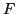
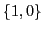
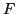
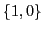
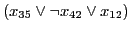
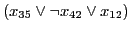
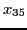
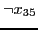
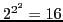

Next: Quick Start - Getting
Up: Conventions and Definitions
Previous: Conventions
Contents
Definitions
- Backjumping - Advancement of the search by skipping over
some choice points that cannot possibly lead to a solution.
- BDD - A Binary Decision Diagram is a DAG-representation
of a Boolean function expressed using only the operator if-then-else,
plus constants T and F, Boolean variables, and parentheses. BDD
representations are usually far more compact than truth table
representations. The form of BDDs we used are reduced and ordered as these are
canonical representations of functions.
- Boolean Function - A Boolean function has one or more
variable or Boolean function arguments and may or may not return a Boolean
value depending on values assigned to or returned from its arguments. Any
Boolean function can be expressed in terms of a nesting of Boolean functions
as BDDs. This fact is used to express arbitrary Boolean functions in our
canonical form (see Section 9.1).
- Boolean Variable - A variable may or may not be assigned a
value: if it is assigned a value that value is one of the atoms in the set
 , where
, where  and  may be thought of as corresponding to true and false, respectively. In this document we alternatively and
interchangeably use the set  for since so much of the
literature uses that notation. Hereafter, when we say variable we mean
Boolean variable.
and  may be thought of as corresponding to true and false, respectively. In this document we alternatively and
interchangeably use the set  for since so much of the
literature uses that notation. Hereafter, when we say variable we mean
Boolean variable.
- Choice point - The point in a search where an uninferred variable is
given a value decided upon by some heuristic.
- Clause - A disjunction (
 ) of literals. For example,
.
) of literals. For example,
.
- CNF - Conjunctive Normal Form. A conjunction (
 )
of clauses. This is an important form for Boolean expressions since
there exists an efficient translation to a logically equivalent CNF
expression from any Boolean expression.
)
of clauses. This is an important form for Boolean expressions since
there exists an efficient translation to a logically equivalent CNF
expression from any Boolean expression.
- DIMACS CNF - Standard format accepted by all CNF SAT
solvers. For a complete specification of this format see
ftp://dimacs.rutgers.edu/pub/challenge/satisfiability/doc/satformat.dvi
Skeletal descriptions are found in Sections 4.2
and 9.2.
- Equi-satisfiable - A scheme for translating one Boolean
function to another such that the target function is satisfiable if and only
if the source function is satisfiable is said to produce an equi-satisfiable
target function.
- Inference - An assignment of a value to a variable that is
forced due to the constraints of the given expression.
- Lemma - A Boolean expression inferred (i.e.,
learned) during the search. SBSAT learns lemmas by analyzing why some
branch of the search tree failed to find a solution. SBSAT's lemmas are
clauses. A solver, such as SBSAT, that learns lemmas can often use
previously learned lemmas to avoid researching the same failed
variable assignments.
- Literal - A variable or its negation. For example,
 or . If the variable is assigned the
value T then the value of literal is T and the
value of is F.
- Logically equivalent - A scheme for translating one Boolean
function to another such that the target function evaluates to the same truth
value as the source function in every model is said to produce a logically
equivalent target function.
- Preprocessing - Operations applied to an sbsat input
expression before search commences. Many such operations are
possible and running one operation may affect the result of others.
A list of all preprocessing options and descriptions of their
operation is given in Section 10.
- Satisfiable - A Boolean function is satisfiable if
and only if there exists an assignment of values to its variables
which causes it to evaluate to 1. A section of the output
generated by sbsat says whether the input expression is
satisfiable. For example, see the next to last line of
Figure 4 below.
- Solution - An assignment of values to variables of a
Boolean function which causes it to evaluate to 1. A section of
the output generated by sbsat provides a solution, if one exists
and if the proper command line switches are set. For example, see the
last lines of Figure 5. A solution, as presented
by sbsat, is a list of variable names and each that is
preceeded by a '-' is assigned value F and all others are
assigned value T.
- Standard input - An input stream from the console to a
running executable, for example sbsat. Input may be
redirected in Unix or Windows using the < character before the
entity containing desired input, usually a file.
- Standard output - An output stream to the console from a
running executable, for example sbsat. Output may be
redirected in Unix or Windows using the > character before the
entity which is to receive the stream, usually a file.
- Switch - an sbsat option given by the user on the
command line. Switches are always preceeded either by a dash (-) or a
double dash (-). All switches understood by sbsat are listed
and described briefly in Section 7.
- Truth Table - The truth table for a particular Boolean
function is a listing of all possible assignments of values to the
variables of the function; and next to each assignment is the value
the function takes under that assignment.
- Unary, Binary, and Ternary Boolean Functions (not, and,
nand, or, nor, xor, equ, imp, nimp, ite ) - A Boolean function of two variables. There are
 different binary Boolean functions and 2 unary functions.
Names associated with a subset of these that include only non-trivial
functions are given in the following table where, for binary functions, the
bits of the 1-0 strings correspond to function values given input values of
00, 01, 10, and 11, respectively, from left to
right, and for the unary function the two bit strings correspond to input
values of 0 and 1, respectively, from left to right. An
important ternary function is if-then-else which we call ite.
Its functionality is also expressed in the table with the obvious
correspondence between input values and function values.
| Binary |
|
Unary |
| and |
0001 |
|
nand |
1110 |
|
not |
10 |
| or |
0111 |
|
nor |
1000 |
|
|
|
| equ |
1001 |
|
xor |
0110 |
|
Ternary |
| imp |
1101 |
|
nimp |
0010 |
|
ite |
01010011 |
- Unsatisfiable - A Boolean function is unsatisfiable
if and only if it is not satisfiable. A section of the output
generated by sbsat will say whether the input expression is
unsatisfiable.
Next: Quick Start - Getting
Up: Conventions and Definitions
Previous: Conventions
Contents
Sean Weaver
2009-01-13